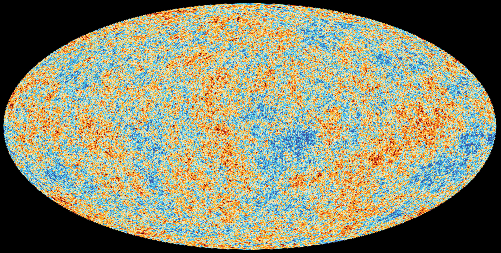

Pixel coordinates:
—
Normalised coords:
—
RGB value:
—
Colour represents relative temperature fluctuation (visualised, not absolute).
About this visualization
This image shows the Cosmic Microwave Background as observed by the Planck satellite. Hover or click on the image to explore pixel-level data. The colours in this image represent tiny temperature variations in the early universe, though the specific colour mapping is for visualization purposes.